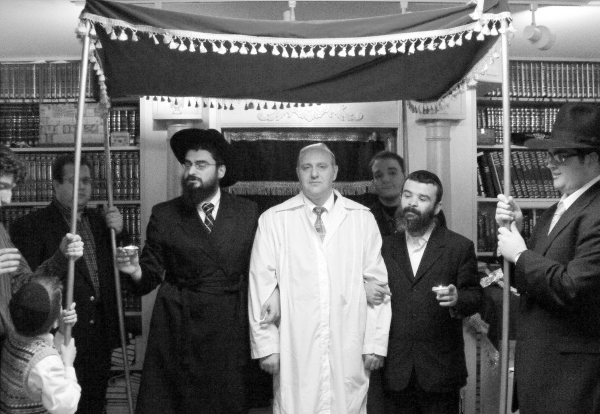

Making Russian Immigrants Feel at Home
As a child he was angry that he was born to the Jewish people. Today, he is a shliach of the Rebbe to Russian speaking Jews living on Staten Island, New York. * Meet R’ Eli Kogan, who has built a warm community for Russian immigrants.

R’ Eli Kogan, shliach to Staten Island, relates:
“I went on mivtza t’fillin one Friday, as I do nearly every week. I have a route in which I visit some stores belonging to Russian immigrants. Over the years, we’ve developed a warm relationship and they wait each week for me to put t’fillin on with them. Afterward, we discuss Jewish topics. They are all open to listening and learning.
“That week I walked into one of the stores where I met someone new, whom I hadn’t seen before. I learned he was one of the partners in the business. After I removed the t’fillin from the arm of the salesman, I asked the new person whether he was Jewish. He said he wasn’t. ‘The only connection my family has with Judaism is my wife’s mother who is Jewish.’ I told him that his connection to the Jewish nation was a lot deeper than he thought for his wife and children are Jews.
“He was very surprised and I could see he was pleased by the information since many of his friends were Jews. I decided to strike while the iron was hot and I told him he needed to tell his wife and children and send them to learn more about their Jewish identity. His wife could attend classes at the Chabad house and the children should be sent to a Jewish Sunday school. He was receptive, and to my delight, the children began learning in a Jewish program.
“Thanks to this, a few more Jewish souls were saved from assimilation. When I recall this incident, as well as other shlichus stories, I am moved because I see it as part of the prophecy of Geula, ‘and the lost and forsaken ones will come …’ These are the sweet fruits of shlichus.”
***
During R’ Kogan’s nine years, thus far, on shlichus to Russian speaking Jews on Staten Island, he has built up a warm community. His activities are many, broad, and quite varied as he addresses the needs of all ages. He works out of a spacious building which he was able to buy with donations from his community.
He attracts many people thanks to his excellent classes, the t’fillos on Shabbos, programs on Jewish holidays, one-on-one conversations, the newspaper he edits that reaches thousands of Russian speakers in the world, and his internet site.
“I don’t consider the people who come to the Chabad house as mekuravim. I don’t act like the teacher who is elevated above his students. I consider them neshamos and treat them like brothers, close friends. I truly love every one of them and they feel it.”
BENEFITS OF ANTI-SEMITISM
R’ Kogan was born and raised in Moscow, far from Jewish life.
“When my grandparents wanted to discuss something without our understanding it, they spoke in Yiddish. The only time that something Jewish was placed on our table was Pesach. My grandfather would walk to the big shul and buy matza there which he brought home. I did not like the matza,” R’ Kogan admits.
When he was quite young, his parents saw his aptitude for mathematics and he was sent to a special math school.
“Anti-Semitism in Russia in those days was deeply entrenched and I was bullied daily by my classmates. The staff also made sure to regularly remind me who I am and which nation I belonged to. I would angrily ask myself why I had to be born a Jew. I would often imagine what it would be like to have been born to a normal family that was not hated, and to lead a normal life.”
When he graduated, he was advised to study applied mathematics.
“I loved the field and wanted to get into a top university, but problems ensued. This university was anti-Semitic and did not allow in Jews. The ones at the top did all they could to reject my request to attend the school.
“One of the acceptance requirements at the university in those days was having to face a medical committee. I was told my teeth were not good enough. I protested this surprising decision, but they did not accept my request for a review. In a rare moment of truth, one of the doctors on the committee whispered to me that it was utter nonsense and my teeth were fine. He said that even if there was a problem with my teeth, according to the law, which he quoted, I could not be disqualified because of that.
“I was still naïve and I sent another appeal to the committee quoting that law. They called me back to see them and when I got there, they wanted to test my blood pressure. They told me the results would be sent to my home. The letter they sent me said that due to high blood pressure I would not be accepted to the university because the academic rigors were very strenuous and dangerous for me. Of course, this was an outright lie and that’s when I ‘got’ it, that it made no difference how talented I was and how much effort I exerted. Just being a Jew disqualified me from entering this university.”
R’ Kogan went to a different university where he completed his course of study.
“Later on I realized that there were universities that accepted Jews and those that did not. Not surprisingly, when I was a young man I was quite resentful about being a Jew.”
The change began when he completed his studies at the same time as communism collapsed.
“The universities began introducing philosophy courses and young people flocked to courses on self-awareness and spirituality. I decided to try a course on philosophy and this aroused questions that we never had occasion to ask before, like why are we alive? What is the purpose of this world? What is our role as human beings in this world? Why are we different from one another?
“I never heard answers to these questions. In Russia before the fall of communism, whoever asked these questions was considered a nutcase. Thoughts and talk revolved solely around work and one’s profession.
“The course got me curious. Philosophy prided itself on providing answers but I felt they were too superficial and wanted to know the truth. I began looking at all kinds of spiritual books.
“At a certain point, I concluded that the source for all the spiritual approaches was the Jewish kabbala. Many of the books quoted kabbala and I decided that rather than study the imitations, I would go to the source. I spent days looking for someone who could teach me kabbala. My first thought was to go to a shul, for the first time in my life, where I could make inquiries.
“Heaven sent me to the Chabad shul, Marina Roscha. I walked in hesitantly and asked the first bachur I met who could teach me Hebrew and kabbala. The bachur smiled and said that in the shul there were classes in Hebrew and I could join that same day, but kabbala is the mysteries of Torah. This was a Chassidic shul where Chassidus is learned which is a higher level than kabbala.
“He lent me some books on Chassidus that were translated into Russian and I read them avidly. At that time, I walked around on such an emotional high that someone who never experienced it wouldn’t understand what I mean. At that time, I knew nothing about Judaism or even about Jewish history. I always hated the moment I was born to a Jewish family, and then, in one moment, I was filled with a powerful love for my tradition and thanks to Hashem for being born a Jew. I hardly slept, I was so excited.
“After a few months of reading books and frequent visits to the shul, I decided to join the yeshiva which had opened there. There were outstanding bachurim who I felt comfortable with, all of them new mekuravim who went through, more or less, what I had gone through. We had a common language. Among them were R’ Nachum Tamrin the shliach in Zhitomir, R’ Boruch Gorin and R’ Boruch Kleinberg, today shluchim in Moscow. I quickly became a Tamim and R’ Tamrin even convinced me to take charge of the Igud Talmidei HaYeshivos. There isn’t a day that goes by that I don’t thank him for this. My success today in shlichus is thanks to that job that I had back then.”
R’ Kogan’s parents, seeing their son become religious, were at first opposed to what he was doing.
“They were frightened, especially my father who tried to convince me to stop; he was sure I had gone crazy. It was only after I left for New York and produced delightful grandchildren that he became proud and happy. Today we are on excellent terms.
“As director of ATaH, I would write a report to the Rebbe every week. We were told not to expect a response and it was enough that the Rebbe received the report and we were blessed. To my surprise, after sending off a report, we received a response: Fortunate are they and great is their merit. I will mention it at the gravesite.
“We were thrilled by this special treatment which spurred us on to go on mivtzaim and spread the wellsprings.”
After two years in Marina Roscha, R’ Kogan flew to 770 with some friends and went to learn in the yeshiva in Morristown. Not long after, he married and the couple settled in Crown Heights where he passed the smicha tests while learning in the kollel. When he finished learning for smicha, he worked in the Lubavitch library alongside chief librarian, R’ Berel Levin.
“My job was to make a catalog of all the Russian language books in the library. It was interesting work but I was set on going on shlichus. I ended up in Staten Island.”
RELATING TO RUSSIAN JEWS
R’ Kogan’s shlichus began through the Bris Avrohom organization, working alongside R’ Avrohom Kanelsky in New Jersey. At the same time he became acquainted with the large Russian Jewish community on Staten Island and began working with them, giving shiurim in Chassidus and later with other activities until he bought a building and moved to the neighborhood.
“Russian Jews generally don’t relate to American Jews, so even someone who feels a little connection to tradition will not go to an English speaking shul. This is why it is so important to have targeted activities for them that is meant for them and speaks their language. When I began working, I could not believe how enormously interested they were.”
R’ Kogan did not leave his home in New Jersey so fast. Every day he traveled to Staten Island to give shiurim. Every week, he would go with his family for Shabbos to stay with one of the members of the community and on Motzaei Shabbos they would go home. “We bought the big building we work in now just one year ago.”
When we asked R’ Kogan about his work, he divided it into two areas, makif activities and p’nimi activities. In the makif arena he gives many lectures and has a weekly broadcast for Russian speakers which is listened to by many Russians. He also publishes a Jewish newspaper in Russian that is printed and distributed in the thousands and is also emailed to about 4000 subscribers. In the p’nimi arena he gives many shiurim, there are t’fillos and farbrengens, and the many one-on-one talks at the Chabad house and house calls.
About 50,000 from the former Soviet Union live on Staten Island and his big dream is to get other shluchim to open Chabad houses around the borough. When he talks about his community, R’ Kogan is excited, even enthused.
“These are people who never visited a shul in their childhood and never experienced Jewish life. In fact, they were educated to believe in atheism. Davening and Torah reading are utterly strange things to them. Every Shabbos, I am moved when I see many Jews who cannot think of a Shabbos without t’filla and kiddush. There are numerous people who changed their lives around and keep kashrus and family purity laws. Without the world of shlichus, where would they be today?”
RESURRECTION OF THE DEAD
The most powerful thing at the Chabad house for Russian speaking Jews of Staten Island is the family atmosphere in which every person feels close to the other members. R’ Kogan relates:
“Three years ago we had someone in the community whose father became sick and was in a coma. The father’s life was sustained by life support equipment, and after a while the medical personnel recommended taking him off the machines because he would not regain consciousness anyway.
“The son, who is very close to us, consulted with me and of course I vehemently opposed the idea and told him the halacha. Instead of that, I asked him to make some mitzva commitments that would help his father’s condition. It was moving to see how all the members of the community joined in the t’fillos and good hachlatos to help the sick man. I gave him a dollar from the Rebbe to place under his father’s pillow.
“What happened was utterly miraculous. After several weeks his father woke up. The doctors were so shocked that in the weeks that followed, when he remained there under observation, medical students from all over the area came to see this medical marvel.”
R’ Kogan has another story:
“We have a couple in the community who are business people. The woman made a mistake in her financial calculations and this was caught by the IRS. The tax policy in the US is very strict and the IRS asked the court for a long jail sentence. It reached the point where it seemed there was no natural means to get out of it. Her husband even asked to sit in jail instead of her but the prosecution said no.
“I remember that difficult period well. The entire community shared in the couple’s pain. I was very closely involved and I suggested to the husband that he undertake a big mitzva commitment. He went to the Rebbe and committed to being circumcised, something he knew about for a long time but was very afraid to do. The very next day he had himself circumcised. Three days passed and the man got a phone call from his lawyer who reassured him that all would be fine. The prosecutor on his case had retired and the one who replaced him was this lawyer’s good friend so the jail sentence was exchanged for a fine.”
R’ Kogan spoke about a special community with many families. He chose to tell us about one particular family out of dozens:
“Three years ago, a Jewish family joined the community straight from a neighborhood church. This family had come from Russia and sought spirituality and a community, but no shul took them in and they fell in with Christianity and became members there. One of their acquaintances who became a member of our community introduced them to us and they have since come back to the Jewish fold.
“We eventually made them a Jewish wedding and today this family is shomer Shabbos and kosher.”
MIVTZA MEZUZA
R’ Kogan is very particular about not sufficing with Jewish outreach that remains in the category of “lights without vessels” or in the category of “being Jewish when it suits me.” As someone who went through the process himself, he speaks to his mekuravim a lot about the importance of doing mitzvos. This comes up in his shiurim and outreach activities. Each time, he talks about the value of a specific mitzva. If someone wants to give the shliach a gift or ask for a bracha, he has to commit to some good deed. That is how many mezuzos were put up and many people began keeping mitzvos, like kashrus and t’fillin, on a daily basis.
When we discussed Mivtza Mezuza, which R’ Kogan puts a lot of effort into, he told us two recent stories:
“A woman in the neighborhood, who does not participate in our programs, called me. She said she heard about us and wanted us to come and check her mezuzos. I went to check them and found just two mezuzos, at the front door and in the kitchen. I could quickly see that they were not kosher and I bought new mezuzos for her.
“When I put up the new mezuzos I asked her why she had decided to have her mezuzos checked. She said that her mother, who had died, had come to her in a dream and begged her to check her mezuzos. When the dream repeated itself several times, she decided to take action.
“Last summer, my family went to a bungalow and I stayed here. I joined them for Shabbos. One week, a question was bothering me and I decided to write to the Rebbe about it.
“The page that I opened to in the Igros Kodesh had nothing to do with my question. The letter consisted of two paragraphs. In one paragraph, the Rebbe writes that it is known that in every matter of k’dusha there is opposition. In the second paragraph, the Rebbe apologizes for allowing himself to ask something, despite not being asked. But he was sure that I wouldn’t be angry and he asked that I check the mezuzos in the place my family lived.
“The next Erev Shabbos, when I went upstate to the bungalow, the first thing I did was check the five mezuzos. It’s good I brought along replacements because all five were pasul!”
A MIRACULOUS BUILDING
R’ Kogan bought a large building for his activities and in Staten Island, this is no mean feat. I asked him how he managed to do this within a relatively short time of having started his shlichus.
“It was a miracle that took place with the Rebbe’s bracha; I have no other explanation. At this time, after the housing bubble burst, the banks don’t readily give mortgages and we did not know how we could buy a building. Before we left New Jersey for Staten Island, we received the Rebbe’s bracha and jumped into the water, believing things would work out.
“We looked around the area with the help of real estate agents and found a spacious building that was perfect for our work. Where would the money come from? We wrote to the Rebbe through the Igros Kodesh and asked for a supernatural bracha. The Rebbe’s answer was to a Jewish community in New York to whom he wrote that he was sending his share and his blessing for the building they were putting up. I considered this an on-the-mark response and bracha. The Rebbe not only sent a bracha but also his participation. I immediately began the buying process. I told my community about it and asked for their help.
“Beforehand, I had calculated how much I thought each community member could give and realized that the sum wasn’t even close to what we needed. But the reality exceeded my wildest imagination; it was very moving to see how people donated sums of money they did not have; they literally poured out all their resources and boruch Hashem, we entered the building debt-free. The sums of money that people gave were incredible and Russian Jews are usually rational, thought-out people. I have no doubt this was supernatural.”
I asked R’ Kogan what the best method is to influence Jews like these to take steps in Jewish observance. He said:
“I cannot say what is the best way; I can tell you what we do. We do things to make people feel connected to the Chabad house so that they feel that this is their second home and we are their family. We definitely do not regard them as ‘material’ we need to work with; rather, we love them like brothers. When a Jew feels that, he gets very involved.”
I asked R’ Kogan how he handles the many intermarried couples. He said:
“We do not push them to divorce. If they do so, it is their decision. But we do speak very unequivocally about this, saying we are happy when a Jewish child or woman comes to shul but we will not give any honors to the non-Jewish members of the family. We will absolutely not celebrate a bar mitzva of a boy whose father is Jewish and whose mother is not, for he is a goy.
“There are some families like this in the community and they understand that this is a red line that we do not cross. There is a family whose mother is not Jewish but lately she had been taking serious steps toward conversion. We do not get involved with this; we refer potential converts to the appropriate halachic authorities. In shiurim we talk a lot about the true essence of a Jew and how a gentile who keeps mitzvos and is a wonderful person and moral too is still not a Jew. To many people this is not easy to accept but this is our Torah and this is what we go by.
“Lately, we have been putting a lot of effort into Jewish youth in order to prevent future assimilation. We get together once every two weeks at the neighborhood community center, deliberately not at the Chabad house. During the course of an interesting evening we learn about Judaism and discuss Jewish identity. This program, attended only by Jewish youth, contributes a lot toward strengthening the Jewish spark, thus going a long way to ensure that they will marry Jews.”
As far as R’ Kogan’s extended shlichus, out of the borders of the neighborhood, via his radio program, Chabad.org in Russian, and a newspaper, he had this to say:
“This is work with tremendous responsibility and we prepare for every program and work to ensure that the articles on the internet site or newspaper are convincing and on a high level. On Chabad.org there are a number of rabbis who respond to questions. It is amazing to see how people care about every mitzvah, as is seen from the questions they ask. It is astonishing every time to see how the words of the Alter Rebbe - that a Jew neither can nor wants to be disconnected from Judaism - come alive. Jews who were not raised with tradition are careful with every detail of mitzvos.
“A letter recently arrived from a woman who lives in Ukraine. She wrote that she is not Jewish but from her acquaintance with Jews she knows that they are good people, moral, and with a sense of righteousness. She heard from them about the Creator of the world and feels that she wants to get closer to Him. Since she is not Jewish, she went to the church in her city but was surprised to hear in their sermons how Jews are the source of all the world’s problems. She had public debates with the priests in which she told them, ‘I know Jews personally; don’t say lies!’ and put them in their place.
“She wrote that after going several times, the guards of the place went over to her and threw her out and now she does not know what to do. She asked whether she can become a Jew since she feels that Judaism is the true religion.
“Obviously, her sentiments seem in line with that of a Jew and we need to find out whether perhaps she is Jewish and is unaware of it. There are hundreds of thousands of people in the former Soviet Union who do not know they are Jewish. But even if she isn’t a Jew, it was very moving to read her letter. Letters like this come from all over the world.”
What does R’ Kogan do about chinuch for his children? He said:
“We live about forty-five minutes from Crown Heights and about an hour from Morristown. There are shluchim in Russia or other countries whose chinuch problems are far more acute. Our children travel for about an hour every morning to school. The traveling isn’t pleasant but it’s doable.
“The children are very involved in our shlichus. When mekuravim see a child dressed as a Jew who has Jewish eidelkait, reviewing the parsha of the week, davening, or helping arrange the shul, it makes a good impression. There are times when we want to make an impact and are unsuccessful, and when they see the children, they melt. It’s no wonder the Rebbe invested so much into children, the Tzivos Hashem.”
MORE EXPLANATION
How does R’ Kogan broadcast the Besuras Ha’Geula?
“We publicize the Besuras Ha’Geula in a gentle way. When working with Russian Jews you need to focus more on explanations and less on slogans.
“When I am asked who the leader of Chabad is, I say the Rebbe. I am used to the follow-up question: but you don’t see him?! I explain how the Rebbe is still operating today in the world and even more so than before Gimmel Tammuz. I convey the message using facts from the reality we live in and talk about the essence of the Rebbe’s leadership.
“When explaining the topic of ‘Rosh B’nei Yisroel,’ and what his role is, people understand it and then it is easier to move on and explain the concept of Moshiach in Torah, and why the Rebbe is the most fitting to redeem us. The fact that many people in the community experienced miracles through the Rebbe’s brachos definitely helps bolster the message.”
EXPANSION
R’ Kogan is the type of person who always seeks to grow:
“We are working on expanding the building so we can accommodate additional people. This past year we were crowded, especially during t’fillos, and our big dream is to also build a mikva to service all Jews in the area, mainly Russian immigrants who will feel more comfortable.”
Two years ago, R’ Kogan brought another shliach for Russian speaking Jews who opened a Chabad house in another part of the neighborhood.
“The shliach is R’ Zev Kushnirsky and he works in South Beach. He is very successful in his work and has a lovely community and an active shul. Just a few months ago, a moving event took place; the joyous celebration honoring the dedication of the first Torah donated by mekuravim and those who daven in the shul. They held hakafos according to the way of Chabad practice.”
Nosson Avrohom. "Making Russian Immigrants Feel at Home." Beis Moshiach, no. 927 (May 21, 2014).